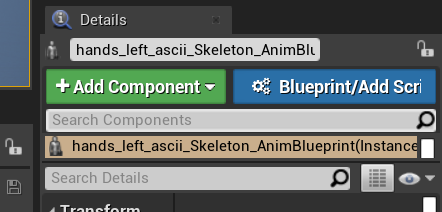
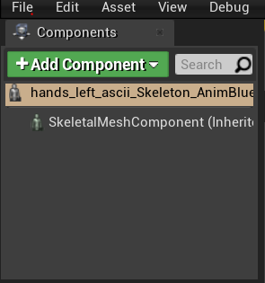
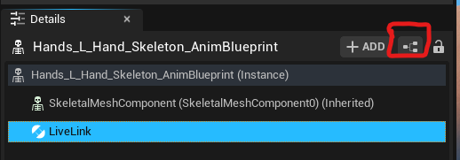
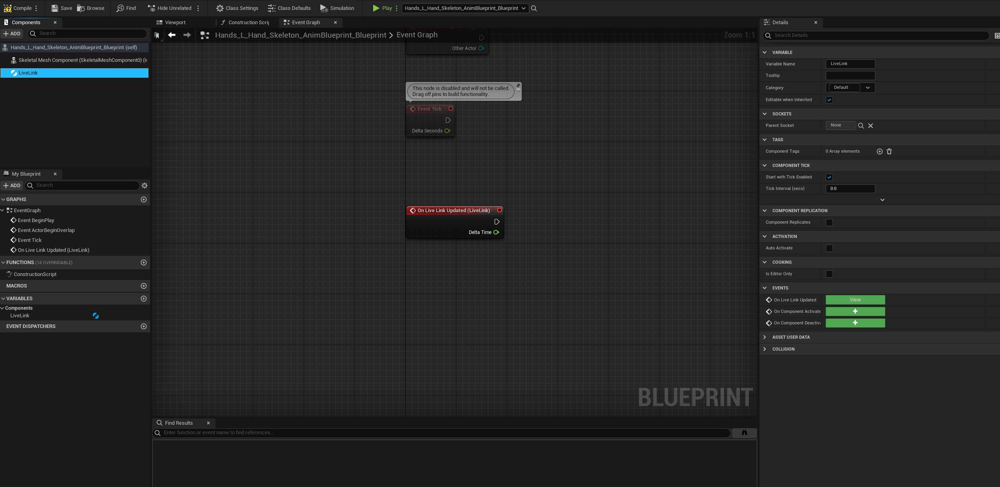
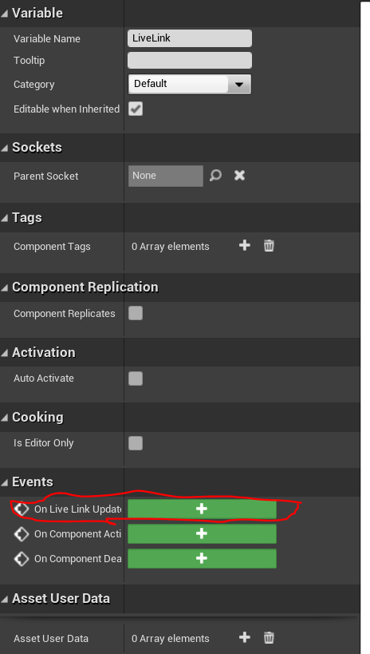
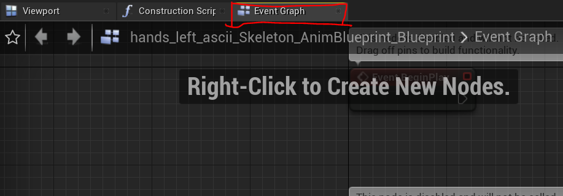
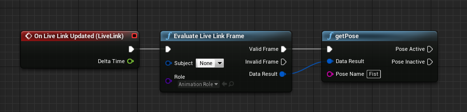
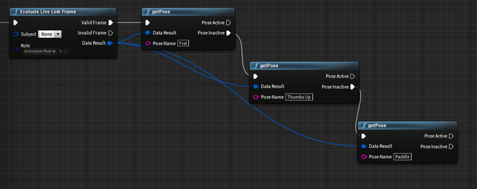

StretchSense Hand Engine software
Unreal Engine 4.24 onwards (https://www.unrealengine.com/en-US/)
Unreal Hand Engine Plugin: Download the most up-to-date Plugins for Unreal Engine from the Downloads Section of your StretchSense Account at http://www.stretchsense.com/my-account
Setup the streaming link from Hand Engine to Unreal Engine: https://stretchsense.my.site.com/defaulthelpcenter26Sep/s/article/Fidelity-and-SuperSplay-Glove-Unreal-Engine-Streaming
Operating System: Windows 10 or later
Import your asset into Unreal
Create an AnimBlueprint asset from the skeletal mesh
Drag the AnimBlueprint asset into scene
With the asset selected in the scene go to details and select Blueprint/Add Script

Once the Blueprint opens select Add Component > Live Link Skeletal Animation

Open up the Animator Blueprint. If prompted you can create a new Animator blueprint and this will open up the blueprint editor.

Go to the details pane of the LiveLink component and add the OnLiveLinkUpdate event


Open the events tab

From the LiveLinkUpdate event attach Evaluate LiveLink Frame and GetPose. Make sure you set the live link subject in the Evaluate node and select Animation Role for the Role.

When the Livelink Pose matches the name listed in getPose the Pose Active node will activate.
To stack multiple events to different poses you can add more getPose Nodes attached to the Pose Inactive output node of the previous getPose node. (Only one pose can be labeled active at once)
Please note: Make sure to drag the Data Result output pin to each getPose node’s Data Result input pin.

*The optional steps are if you want to have live hand data visualization running in parallel with the pose detection. You can attach this to a blank actor blueprint or similar.